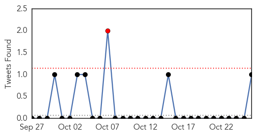
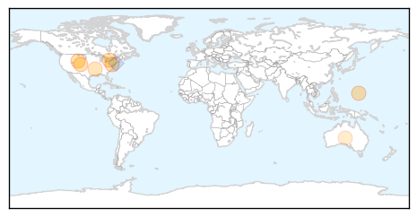
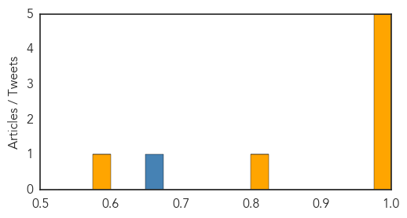
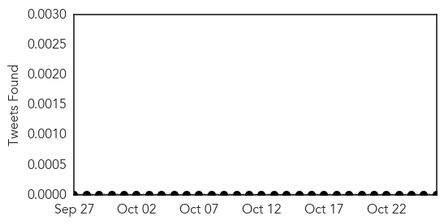

Influenza
30-Day Web Trend
0 alerts, 0 warnings

30-Day Twitter Trend
1 alerts, 0 warnings

Article Locations
Article Confidences
Top Articles:
- 0.998
- WDH: Flu season’s approach means vaccination time
- 0.997
- Do you know the facts about flu vaccine myths?
- 0.997
- Health experts: Be smart, get flu shot
- 0.994
- Widespread flu cases reported
- 0.976
- Top 5 reasons Toronto Public Health says to get your flu shot
- 0.807
- Shipment of Flu Vaccines Delayed; No Shortage, Officials Say
- 0.600
- CSL becomes number two flu vaccines firm
Top Tweets:
- 0.881
- RT: Flu vaccine news: CSL to Buy Novartis Influenza-Vaccine Unit for $275 Million http://t.co/eu2Q9tRiiZ pathogenposse flu
Measles
30-Day Web Trend
0 alerts, 0 warnings
30-Day Twitter Trend
0 alerts, 0 warnings

Article Locations
Article Confidences

Top Articles:
Top Tweets:
-
No tweets found for Oct 26, 2014